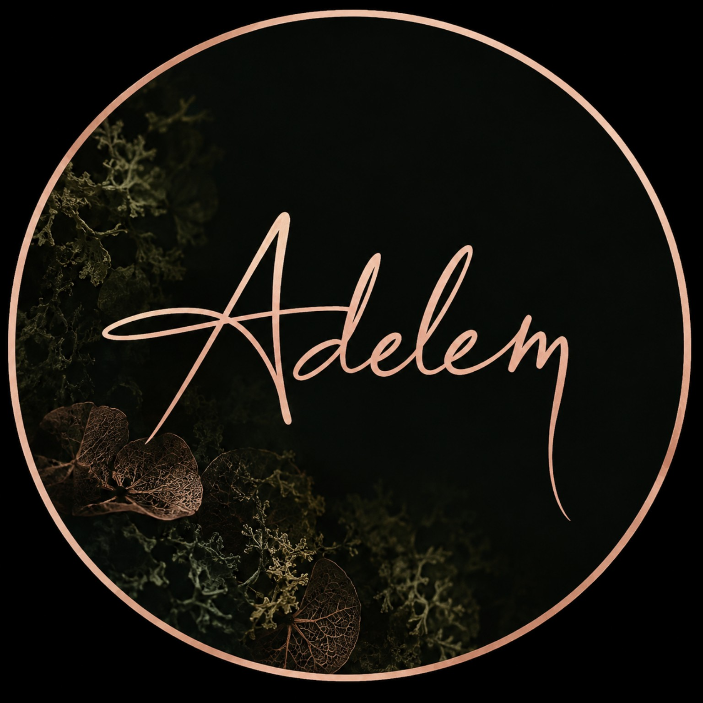

Formes libres
Les
sculptures
Quand le végétal quitte le mur, la composition se regarde tout autour et dialogue autrement avec l’espace.

Volume
Composer
dans l’espace
L’écorce, le lichen et les feuillages construisent un relief qui change selon le point de vue.
- 01Pièces libres
- 02Petites séries non reproduites
- 03Formats guidés par la matière
En développement
La matière
prend place
Cette famille d’œuvres se construit au rythme des trouvailles et des expérimentations de l’atelier.

Évoquer une sculpture
Chaque demande commence par un lieu, une envie et un échange. Les coordonnées définitives seront intégrées sans inventer un canal de contact.
Pièces uniques · travail à la main